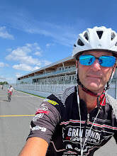

|  |
Me voici...rarement ailleurs que sur mon vélo...mais présentement sur mon ordi....Je me présente, Eric, cycliste ayant parcouru 60000km à vie, c'est à dire entre 2500 et 7000km par été. Je me suis donné comme défi de faire toute la route verte (chaque cm (je ne me suis pas trompé, c'est bien des centimètres) des 5300km au total. Je me suis dit que je devais partager mes impressions, alors voici la raison de ce site. Ais-je mentionné que j'adore le vélo...et que c'est tellement la meilleure façon de découvrir le monde... Donc, avec toute cette expérience, je me suis dit que je pouvais en faire profiter autant avec ce carnet de route que de proposer des expéditions que j'ai appelées affectueusement des "aventures" pour célibataire, couple ou groupe. Je m'occupe de tout!! Pour les détails, veuillez m'écrire en privé.
J'ai mon cours de secourisme et RCR à jour.
Configuration de mon vélo
Je vous indique la config de base de mon vélo si vous voulez comparer si les trajets sont aussi faisable avec vos vélos car certain trajet sont en poussière de roche, sable, grosse roche, etc... Donc, dans les tables, la section faisable à vélo de route, veut dire que je l'ai fais avec ce vélo et cette config.
Argon 18 Gallium |
© 2024 Pedal Planet Expeditions